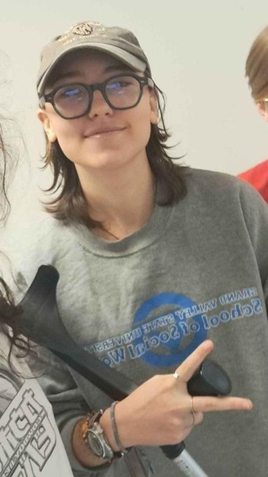
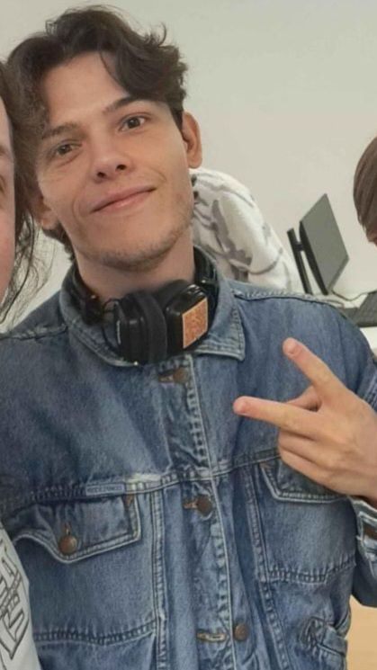

Bien, bien, bien. Maintenant que vous avez mis des têtes sur vos futures proies, vous avez toutes les informations nécessaires pour retrouver votre parrain ou votre marraine !
Votre dernière mission va pouvoir commencer !
Pour terminer votre mission, je vais faire travailler votre oreille musicale...
Le principe est simple : je vais vous faire écouter des chansons (des vieilleries pour être précis) et vous allez devoir compléter des paroles. Grâce aux quatre éléments que vous aurez trouvé, il vous suffira de les mettre en commun, et tout deviendra clair. S'il vous manque une information, vérifiez bien les créatures que vous avez pris en photo.
Sans un -----, les rois abdiquent.
[...] sous soleil tropical, respirer l'air pur du napalm, ----- villages détruits.
Être, mourir pour mieux renaître, ----- mensonges d'antan.
Le curé solennel fixa la vierge dans les yeux : "----- un problème sérieux qu'il faut [...]
Une fois que vous avez compris, n'hésitez pas à vous rendre dans la salle des DN2 Numérique et de serrer la main d'une bonne poigne à la personne qui vous parraine !
Désolé de faire encore une fois appel à vous, aventuriers, mais une nouvelle recrue semble avoir fait son apparition chez vos cibles. Votre mission, si vous l'acceptez, est de faire une selfie avec elle tout en ayant son consentement et en lui expliquant le contexte, afin de compléter officiellement votre bestiaire.